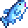
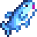

Web Presentación Stardew Valley Alan Alcañiz
PLAYA
La pesca en Stardew Valley es una actividad relajante y desafiante que te permite capturar peces para vender, cocinar o completar misiones. Puedes pescar en ríos, lagos y el océano, y cada área tiene especies únicas según la estación, el clima y la hora del día.
- Herramientas: Necesitarás una caña de pescar, que puedes mejorar en la tienda de Willy para aumentar tus posibilidades de éxito.
- Mini-juego: Para atrapar un pez, debes mantenerlo dentro de una barra verde mientras luchas contra su movimiento. La dificultad varía según la especie.
- Cebos y aparejos: Puedes equipar cebos para aumentar la velocidad con la que los peces muerden y usar aparejos para facilitar la pesca.
- Especies raras: Hay peces legendarios que ofrecen un desafío adicional y grandes recompensas al capturarlos.
- Otras capturas: Además de peces, puedes encontrar cofres con tesoros, basura reciclable y objetos útiles mientras pescas.
 
